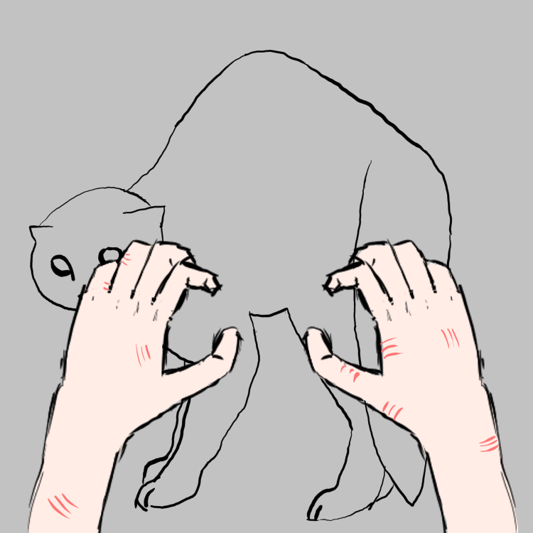

ailhay's art:
> to view in hq: right click img -> open in new tab
> I have anything but confidence, but here we go >,<
> Mostly WIP pieces that may not ever be finished!
> Be sure to check out commissions if you want to see completed works of my OC!
> 2025:
January:
> I plan on eventually making this into a full reference image for future commisions, but man is this hard. I currently have the body already drawn but something feels off and I can't put my finger on it. I will either figure it out or replace this with the full reference!
> 2024:
December:
> The original plan for this one was for my OC, Kyouko, to be sleeping on a minecraft bed. I tried to draw the body a few times before giving up and hiding the minecraft screenshot layer.
January:

> "Pain of Love" started out as me practicing drawing hands, then I thought about cats. If I am ever to go back and finish a piece this would be the one.
> I can't really remember what I was going after for this, think it was more about just practicing drawing faces.
> 2023:
September:
> Created on [aiu]'s birthday
view all art (high-quality):
[google drive link]